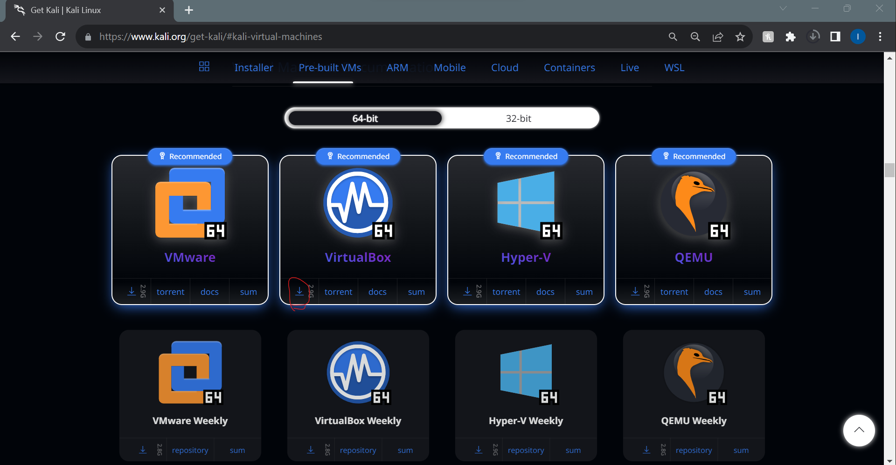

Linux for Ethical Hackers#
Installations#
There are two ways to run linux:
Virtual Machine
Hard Install on to YOu computer
We will use a virtual machine for this textbook.
Follow the following steps to do so:
Note: These steps have been adapted from The Odin Project. However, we make some important changes in this tutorial, so please follow along here.
Step 1: Download VirtualBox and Kali Linux#
Installing a VM is a simple process. This guide uses Oracle’s VirtualBox program to create and run the VM. This program is open-source, free, and simple. What more can you ask for? Now, let’s make sure we have everything downloaded and ready for installation.
IMPORTANT#
Once you have completed these instructions, you are expected to work entirely in the VM. Maximize the window, add more virtual monitors if you have them, fire up the Internet Browser in the Whisker Menu  on the top left of the desktop. You should not be using anything outside of the VM while working on The Odin Project. If you feel like you have a good understanding after using the VM for a while, and or want to improve your experience, we recommend dual-booting Ubuntu, which there are instructions for below.
on the top left of the desktop. You should not be using anything outside of the VM while working on The Odin Project. If you feel like you have a good understanding after using the VM for a while, and or want to improve your experience, we recommend dual-booting Ubuntu, which there are instructions for below.
Step 1.1: Download VirtualBox#
Click here and download VirtualBox for Windows hosts.
Step 1.2: Download Kali Linux#
Head over to the official kali download page for virtual machines.
You will see icons for downloading Kali images for differnet virtual machines, since we are using VirtualBox click on the icon circled in red:

Step 2: Install VirtualBox and set up Xubuntu#
Step 2.1: Install VirtualBox#
Installing VirtualBox is very straightforward. It doesn’t require much technical knowledge and is the same process as installing any other program. Double clicking the downloaded VirtualBox file will start the installation process.
Windows users - Errors:
If you receive an error about needing Microsoft Visual C++ 2019 Redistributable Package, you can find it on official Microsoft Learn page. You most likely want the version with X64 Architecture (that means 64-bit) - download and install it then try installing VirtualBox again.
Make sure you install the application on C: drive, as it has tendency to error out otherwise. The virtual machine itself can be installed anywhere but we’ll get to that soon.
As the software installs, the progress bar might appear to be stuck; just wait for it to finish.
Mac users - Errors:
If you run in to a message saying “installation failed” follow the instructions at 2:50 in the following video:
Step 2.2: Prepare VirtualBox for Xubuntu#
Now that you have VirtualBox installed, launch the program. Once open, you should see the start screen.

Click on the New button to create a virtual operating system. Give it a name of Xubuntu, if you want the VM installed somewhere else than default C: location, change that accordingly in the Folder option. This is the place where your virtual disk will reside, so make sure that you’ve got at least 30GB for that. In ISO Image choose Other - you’ll see a window open for you to find the .iso file on your PC. It most likely is in the Downloads folder. Leave Skip Unattended Installation as it is.

Continue by pressing Next and follow the next steps:
Step 2.2.1: Unattended guest OS install setup#
You should see a window like this one now:

You want to tick the Guest Additions and Install in Background options and also change your Username and Password fields to your liking. Note that your username must be all lower-case and no more than 32 characters. If you forget to change the default password, it will be changeme. Leave the Guest Additions ISO, Hostname and Domain Name as they are. Continue by pressing Next.
Step 2.2.2: Hardware#

In the Hardware section of the installation you want to set your Base Memory to at least 2048 MB or more if possible - the upper limit is half of your total RAM but 4096 MB with the settings we recommend should give you a smooth experience.
For example, if you have 8 GB (8192 MB respectively) of RAM, you could allocate up to 4096 MB (1024 MB to 1 GB) to your VM’s operating system. If you do not know how much RAM is available to you, please run this Google query to learn how to find this out. If the VM runs a bit slow, try allocating more memory!
(note: Difficulty converting your GigaBytes into MegaBytes? 1 GB of RAM is equal to 1024 MB. Therefore, you can say that 8 GB = 8 x 1024 = 8192 MB.)
As for Processors you want this to be at 2 and no more. Leave Enable EFI (special OSes only) as it is - that is unchecked - and click Next to continue.
Step 2.2.3: Virtual hard disk#

Now, you want to leave all the settings as they are besides the Disk Size, we recommend giving the VM at least 30GB of space. Reminder that this disk will be created in the folder that you’ve specified on the very first step of the VM creation process but nonetheless, the disk can be moved and resized in the future if needed.
Step 2.2.4: Begin the unattended installation#
Click Next to be taken to a Summary page, on which you can simply click Finish to begin the process of unattended installation. The neat thing about it? It installs the OS and GuestAdditions on its own, without your input! Just let it do its own thing, you will know it is finished when you will see a login screen like this one in the Preview section:

Just click the green arrow called Show and you’ll be presented with a VM window and the login screen. Log in with the password you’ve set up during the installation process and we’ll have one bit of configuration left to do.
It is possible that you’ll receive an error like this one after clicking Finish:

It means you have to enable virtualization in your computer’s BIOS/UEFI settings. Alternative set of instructions. If you have an AMD CPU, you’re probably looking for something called SVM to enable, for Intel CPUs, Intel Virtualization Technology. The error should tell you what it is looking for. After you deal with it, just Start the machine and let things happen, you’ll know that the process has finished when you see a login screen:

Step 3: Setting correct sudo permissions#
Due to how the unattended installation is configured by VirtualBox, your account doesn’t have proper sudo permissions. Think of them as the equivalent to Run as administrator on your Windows machine - you can imagine why it would be important to have them in order.
Step 3.1: Navigate to users and group#
First, click on the  in top left of your window, afterwards type in
in top left of your window, afterwards type in Users and you should see Users and Groups show up. Click on it.

Step 3.2: Manage groups#
In the window that just came up you want to click on Manage Groups, click somewhere on the list and type sudo on your keyboard. That should bring you to the sudo entry like in the picture:

Step 3.2: Add yourself to sudo#
With sudo selected, click Properties and in the window that shows up tick your user’s name like this:

And then click OK. You will be greeted with a password prompt - it’s the same one you logged in with.
Step 3.3: Reboot your VM#
Now that this is all done, you can close those windows and reboot your VM. You can open a Terminal window by doing Ctrl + Alt + T and type in reboot and then press Enter to execute the command. Alternatively, you can click on the  , then click on the power icon in bottom right and pick Restart.
, then click on the power icon in bottom right and pick Restart.


Step 3.4: Test your newly gained sudo privileges#
Now that you have access to sudo, we can use this to update our Xubuntu through the Terminal. Open the Terminal and use these commands, one after another:
sudo apt update
sudo apt upgrade
You will be asked for your password after using the first one - type it in and use Enter to provide your terminal with the password. There is no visual feedback about what you’re typing in but you are indeed doing so.
After sudo apt upgrade runs for a while you will be asked whether you want to install things - do so to update your machine. If you have any issues, do not hesitate to come over to our Discord server and ask for help in the #virtualbox-help channel.
Step 4: Understand your new VM#
Here are some tips to help you get started in a virtual environment:
Enable the toolbar in your VM settings - there are useful options there that you might want to play around with, especially the ones concerning full screen or multiple displays. To do so, click on Settings and then navigate to User Interface and finally tick Show at Top of Screen.

All your work should happen in the VM. You will install everything you need for coding, including your text editor, language environments and various tools inside the VM. The Xubuntu installation inside of your VM also comes with a web browser pre-installed but we’ll be installing Chrome shortly.
To install software on your VM, you will follow the Linux (Ubuntu) installation instructions from inside the Xubuntu VM.
You might need to take screenshots when asking for help on our Discord, here’s how depending on where you use it:
Inside the VM: you can use Shift + PrtSrc to take screenshots of portion of your screen. Alternatively, you can click the Whisker Menu and type in Screenshot, in which you can choose to take a screenshot of your entire screen, the current window you are on or to select a certain area to capture.
On your host (Windows): you can use a shortcut of the Host Key (Right Ctrl + E) or click View -> Take Screenshot for a full screenshot. A different way would be unfocusing your VM window by clicking outside of it and then using the regular Windows shortcut of Windows key + Shift + S to take screenshots of portion of your screen.
Remember: all of the development that you’ll do related to TOP should be done in the VM.
We recommend going full screen (View -> Full-screen Mode) and forgetting about your host OS (Windows). For best performance, close all programs inside of your host OS when running your VM.
If you added additional monitors in the Display tab of your VM settings, with the VM running, clicking View -> Virtual Screen 2 -> Enable. You can run fullscreen with multiple monitors, but it may ask for more Video Memory, which you should have increased when adding more monitors. Make sure you enable your Virtual Screens in windowed mode before going fullscreen, otherwise they won’t work. Upon exiting fullscreen, your secondary display may close. You can reopen it with these instructions.
Frequent issues/questions:#
If upon trying to start the VM you only get a black screen, close and
power offthe VM, click Settings -> Display and make sure Enable 3D Acceleration is UNCHECKED, and Video memory is set to AT LEAST 128MB.Running out of space? Look at these instructions on our Discord.
Are you using a touchscreen? Here’s a video on how to enable touchscreen controls for VirtualBox.
VM performance tips:
When running the VM, minimize your Windows activity. You probably want to be plugged into power as well if you’re using a laptop.
Make sure your processors are set to only 2 and the Memory you’ve given your VM is at most half of your total RAM but at least 2GB. If you can’t spare the 2GB, dual boot.
If videos lag in the VM, make sure to max out Video Memory to whatever you can or alternatively play them on your Windows if your machine can handle it. Disable 3D Acceleration if you have it enabled.
Do look out for the
 icon in bottom right of your VM window, if you have it, here’s a VirtualBox forum thread on how to get rid of it. You want to have the
icon in bottom right of your VM window, if you have it, here’s a VirtualBox forum thread on how to get rid of it. You want to have the  icon instead. If you don’t see a or a in bottom right, you have to exit full screen mode to see them.
icon instead. If you don’t see a or a in bottom right, you have to exit full screen mode to see them.
If your performance is still lacking, go for a dual boot as this will make sure you’re using all of your specs for one OS only, thus improving your experience significantly.
If your scroll wheel behaves oddly in Google Chrome and you have gone through VM performance tips to make sure your VM is working as intended, look into
imwheel: see these AskUbuntu instructions for more information. If you have VSCode installed, use that instead ofgedit, otherwise install it withsudo apt install gedit- if you install it withsnap, it won’t let you save the file. To make sureimwheelworks every startup, you need to click the whisker , type
, type Sessionand click onSession and Startupthat shows up, go toApplication Autostart, clickAddand put itimwheelforNameandimwheel -b "4 5forCommand. ClickOKand you should be all set.
Step 5: Safely shutting down your VM#
You don’t pull the plug on your everyday use computer, right? Why would you do the same to your virtual computer? When you click the X button and just close out your VM, you might as well say goodbye to your files. In this section, you’ll understand three ways you can shut off your VM.
Option 1 - Shutting down from inside the VM with UI#
Clicking on the Whisker Menu  and clicking the power icon will give you several options on how to modify your session, including Shutting Down. Yep, that’s the same place you might’ve used to Restart before!
and clicking the power icon will give you several options on how to modify your session, including Shutting Down. Yep, that’s the same place you might’ve used to Restart before!
Option 2 - Shutting down from inside the VM with the terminal#
Simply enough, typing poweroff will do in this case. Your system will immediately shutdown.
Option 3 - Shutting down from outside the VM#
The last way to accomplish this goal of safely shutting down is by using the VM interface. Clicking on the File tab and hitting the close button (which also has a Power Icon) will bring up a popup titled Close Virtual Machine. This popup asks if you want to Save the machine state, Send the shutdown signal, or Power off the machine.


To be safe, click the Send the shutdown signal radio and hit OK. This will safely power down your VM and your files will not get corrupted.